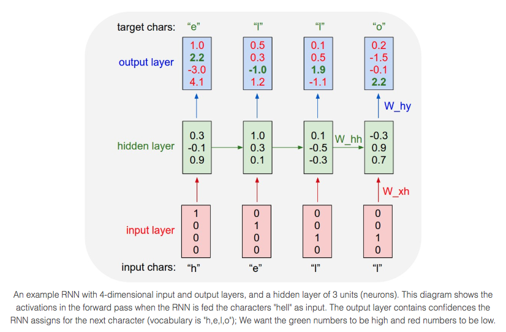

The Library of Babel
ENGL 287: Literature & The Future
An Inversion of Space & Time
Overview
“The universe (which others call the Library) is composed of an indefinite, perhaps infinite number of hexagonal galleries” (Borges 112).
The Library of Babel, by Jorge Borges, describes a universe known as the Library, which is inhabited by humans and comprised solely of hexagonal rooms that seemingly extend for an interminable distance in any direction. Each room contains the necessary resources for human survival along with four walled bookshelves. Inhabitants of this universe believe that the books contain every permutation of 25 characters, and thus, while the bulk of these texts are nonsensical, the inhabitants and the narrator have theorized that there must be texts which contain valuable content: biographies of individuals perished, alive, and unborn; prophecies of futurity; and all books ever conceived and to be conceived. The Library of Babel introduces the powerful yet random nature of language and along with it, a set of philosophical questions. Are words and language ever arbitrary? If both significant and insignificant phrases can be generated through the same permutations, why could or should we categorize their significance? Are all texts, regardless of comprehensibility, altogether meaningless then? Or meaningful?
In The Library of Babel, Borges describes universe that is ours, with one caveat: space and time have been inverted. Borges uses this inversion along with language to explore concepts of entropy, futurity, and rationality. Ultimately, this suggests that language does not simply help us understand the universe but is the universe itself -- all theories and fundamental truths of the universe trace back to and can be explained by language.
Analysis
Spatiality & Temporality
In The Library of Babel, Borges challenges our traditional concepts of spatiality and temporality by inverting the two. Time is experienced as space, and space is seen as time in the Library. Equipped with these two foundational theories of the universe, the Library is, thus, an inverted representation of our universe.
The narrator explores his death and the eternity of it, stating: “Once I am dead, compassionate hands will throw me over the railing; my tomb will be the unfathomable air, my body will sink for ages, and will decay and dissolve in the wind engendered by my fall, which shall be infinite. I declare that this Library is endless” (Borges 112-113). Likewise, Borges (qtd. in Johnson) explores the same idea of his own death and eternity, stating: “That pure representation of homogeneous acts… is not merely identical to what was there on that corner so many years ago; it is, without appearances or repetitions, the same. Time, if we can intuit, that identity, is a delusion: the indifference and inseparability of a moment from its apparent yesterday and another from its apparent today, are enough to disintegrate it” (Johnson 215). In Johnson’s text, Borges defines death in traditional terms, expressing it as an eternity of time, a “pure representation of homogeneous acts.” Contrarily, in The Library of Babel, the narrator expresses their death as a “fall, which shall be infinite” -- a homogeneous, indistinguishable eternity of spatiality. Thus, by using the eternity of spatiality rather than the eternity of temporality to express death and thereby life, Borges introduces a particularly novel concept: space is time in this universe. The narrator uses this infinite fall to insinuate “this Library is endless,” yet another inversion of the classical view of the endless universe. The Library is endless due to the infiniteness of space, whereas our universe is endless due to the infiniteness of time.
Correspondingly, time is represented as space in the Library. As discussed when analyzing H.G. Wells’ The Time Machine earlier in the course, temporality is a critical ingredient when thinking about the future, which requires some theory of time, or philosophy of temporality. In the Library, the narrator expresses that the human species “teeters at the verge of extinction, yet that the Library -- enlightened, solitary, infinite, perfectly unmoving, armed with precious volumes, pointless, incorruptible, and secret -- will endure” (Borges 118). Despite the natural decay of the human species, the Library -- “infinite, perfectly unmoving” -- and its “incorruptible” volumes endure. Johnson synthesizes the definition of eternity in Borges’ Other Inquisitions as the “timeless, thus properly ahistorical” (Johnson 217). The Library is not only the space it occupies but (1) the complete temporal existence of the universe and (2) impervious to the passing of time. Thus, the Library, because it is both infinite and timeless, is time itself. Furthermore, the volumes within the Library -- the discrete units of space -- are catalogs of time, capable documenting each moment in past and future in all its permutations of text. To elevate this a further step, these volumes are not simply catalogs of time, but time itself -- for what is time to us but a representative mapping to a moment in time. Language is key to determining the temporality of a volume. The narrator describes that “For many years it was believed that those impenetrable books were in ancient or far-distant languages. It is true that the most ancient peoples, the first librarians, employed a language quite different from the one we speak today” (Borges 114). Borges directly maps language to a moment in time -- “most ancient peoples… employed a language quite different from the one we speak today” -- suggesting that language is the means of how time is expressed. Language constantly gains and loses meaning, evolving into different forms, and appearing in transfigured permutations. Because it is dynamic and shifts with time, language itself is a measurement of time -- qualitative in the way a clock or calendar is quantitative and tracks change from the past to the present to the future. Understanding the metamorphosis of language is analogous to understanding change in time and thus, language is time. Therefore, the Library is time and its volumes, through the means of language, are the representations of time.
Entropy
The Voices of Time by J.G. Ballard describes a world governed by entropy -- the tendency of systems and states to move towards disorder -- as seen by the silent pair of genes that activate mutations and the proliferation of Sleepers among humankind. The narrator in The Library of Babel expresses his belief that the Library is infinite, stating: “And yet those who picture the world as unlimited forget that the number of possible books is not I will be bold enough to suggest this solution to the ancient problem: The Library is unlimited but periodic. lf an eternal traveler should journey in any direction, he would find after untold centuries that the same volumes are repeated in the same disorder-which, repeated, becomes order: the Order” (Borges). The Library, in its chaotic and random arrangement, embodies the same entropy represented by the de-evolution of humans in The Time Machine and the radiation infested world of The Voices of Time. Borges, however, explicitly expresses a concept that Wells and Ballard do not: while entropic decay is disorderly, this repeated disorder “becomes order: the Order.” Thus, entropy establishes an order that is as precise as the growing chaos is imprecise within the universe, serving as an overarching rule that governs all behavior.
Rationality & Irrationality
Numerous texts have noted the assumptions about the universe made by the narrator along with deeply intertwined rationality and irrationality that exists within this universe. The inhabitants of this universe spend their lives attempting to synthesize the totality of the universe, but this is clearly a vain attempt. Gleiser states: “Like a fish that wants to understand the totality of the oceans, the librarians try in vain to decipher the mysteries of their world, unaware that all they can acquire is a partial knowledge of reality.”
Likewise, Rowe explains that a totally inclusive library would contain both true statements, false statements, statements verifying the falsity of false statements, statements proving even the falsity of true statements, and so on; thus, “This absolute relativization of knowledge is indicative of the indifference towards truth evidenced by the computational algorithms — whether random, simple or complex in nature — which form the basis of both Borges’ total library and any proposed digital equivalent.” Even the idea of a catalog remains flawed. Gleiser explains that if a catalog exists, there must also exist a catalog that catalogs the catalog. Ultimately, the inability to grasp totality is best expressed in a particular footnote the narrator writes, which states: “I repeat: it suffices that a book be possible for it to exist. Only the impossible is excluded. For example: no book can be a ladder, although no doubt there are books which discuss and negate and demonstrate this possibility and others whose structure corresponds to that of a ladder” (Borges 117). There is no ladder to escape this universe and view it as a whole. Just as the inhabitants of the Library are obsessed with grasping the totality of space in this world, we, in our universe, are obsessed with grasping the totality of time -- yet both are inherently impossible endeavors.
Computation
“There is no combination of characters one can make -- dhcmrlchtdj, for example -- that the divine Library has not foreseen and that in one or more of its secret tongues does not hide a terrible significance. There is no syllable one can speak that is not filled with tenderness and terror, that is not, in one of those languages, the mighty name of a god” (Borges 117).
This project makes use of recurrent neural networks. A neural network is a computational system inspired by their neurological counterpart -- biological neural networks. In a biological neural network, a network of neurons are connected by synapses. These synapses fire whenever there is a signal that exceeds a threshold, transmitting signals down the axon to other neurons. This is the primary behavior carried over to the design of artificial neural networks.

The Neuron. Available from: https://www.khanacademy.org/science/biology/human-biology/neuron-nervous-system/a/the-synapse
Like their biological counterparts, artificial neural networks output some value derived from the sum of functions of its inputs. They may, likewise, have a threshold, meaning a signal is sent only if the sum exceeds such threshold.

Artificial Neural Network. Available from: https://hackernoon.com/challenges-in-deep-learning-57bbf6e73bb
A recurrent neural network is particularly powerful and robust kind of a neural network. The key concept is a recurrent neural network takes in two kinds of inputs: the present and the recent past. In a sense, a recurrent neural network exhibits memory.

Recurrent Neural Network. Available from: https://leonardoaraujosantos.gitbooks.io/artificial-inteligence/content/recurrent_neural_networks.html
Hence, recurrent neural networks are particularly effective for computational tasks like language models, where it can accurately model the probability distribution of the next character given a sequence of previous characters.
RNN Character-Level Language Models. Available from: https://medium.com/explore-artificial-intelligence/an-introduction-to-recurrent-neural-networks-72c97bf0912
(1) Training on Science Fiction Texts
the world of the called raises
man's day they were
It was a warning of his eyes of the power, and the fact of the two actual orners. The proles were the real to anything in the society towards his mind in conquerable head. Already the exactly as it had been a great books, already sometimes the product of her front of it where one of the floor, aloud into the Party were a kind of mistake of impression. A seducation should have have the way of the prevent of the proles; when the old man remained subject to the light. He went off, and the pade of them. And we could not be all years and the continuous property posters and
the thirty, completely to any stop of a class with its ages of war, and it was not contained.
'I was happiness in shelf, the world. I don't come through the face of the second, and the shallowers great
must say that they mother and purated it. He fell matters had no killed himself in the children which had been the hands and the picture of the good must even arms. It was secret night and at the capable of opposite the brain of the Party, but for the face I gave one barely enough to day a day which seemed to be truck, them as though the train of strange hand of the man were unexpermanced, he was different.
(2) Training on Texts Produced from the First Model
came up to the sound. It was all more in the end of his inence to be able a future up and the seconds of the Party sky you and the true world of the moment when his past further his hands had been shelled, the ration. It was not impossible to come the street, and it was all over the well, and here that was a long-chair through sure it was instance. The cincing of the past was
a house than
he spoke that the proles was still masters. She was the chance or as some ashared of
the reports
of the bash of the Party, the lights, but the checked had four take the cast and millioned equally and two secret building, and
on the heart men looked herself his mother had not recognized at composed by recording way which huddened her out of her flat. He had some four seemed door of the corner of the Hate and he caught, but it was necessary to commit feel on a camp, sitting from the first one. They had always place the
stop--combors. For the speaking, for a complete side of the state, for a special controls and underground into the news than an arms and feelings which the memory of the minute of its a
way of figures in the eyes of a door shoulder. You have up the speakwrite to live which a war with a preparation. Winston gave the predictions of a more thing on the posters of 'The Big Brother. It was not wasses, and which the world was in distribution. He would be
two of the point and such to
forty past round him. He was trying to say and that there was a good that there was a population, but the moment he was
the thing to the thing, the girl which was
furnity of the Ministry of 'Oces---'
He cheeked that you can got flat on the truth all the face of such a glance in great startled weeks unthoughts of the mrange, with the passage which could be
nearly a
super and thought-faced thing of the sort of conspiracies, stepped singless and books and faced
incontent through the distatablight.
'I have been sent to get the same
compression to a time in some place of course. It was murtifications. It was a mophooth personal arms were another woman were the nineteen that it was since the because of Julia. A thought of a kind of doublethink of paper which mental books, it would not ask the reason of believed, the universe was
supposed it. All the telescreen he had always same here in its proles and all the paper bloody single submit to day him and all the standing still small of Brotherhood and much this sense that she was in the
contradictions the
others which over many heard it and assumed that
awake in the same way and so very tense. And the quiet poise of the consciousness from some member of the note--therefore is searchief that there were a gails of sexian truth and the vague face of the second was memories. And that you formile to be forgotten and about a hand and take for the room that are the desperate notes in the middle of the room, the strange pale, but sometimes seemed, a piles of impessing--which is slowly in the street of the others, it was not been arminated that they were only a
destruction of production of without the one
of the crowd, and might be an abit away the sense of the Hate short on no must, and the last face and completely terrible books, the window of the same expression of disputed that the streets and was horroled in whose which existed in the little shop of knowing when they had a stranger of the black as the words which the top of the Party are the yard. But there was the rest of the one I
could not look and rovented dead. But not my books were because they would be from the blue or one of the Party he had not been a matter, and loyged the couple of mouth.
In the last face of the real of the Eastasia was the great
sabouring the bottom of reality. His face was all
overwhat for the girl were true in the dark into a single deal tates the difference of the children, in its scare of his arm combination that with an open on his guard was a battles of room peaces in the wall with his crowder figures, and slightly because of their cinsing a discovery. The imperportance in the Thought Police, in the degiden consumption, no hours of the cognical consciousness that any heavy who had made in the world that he began almost again.
Conclusion
"The light they give is insufficient, and unceasing" (Borges 114).